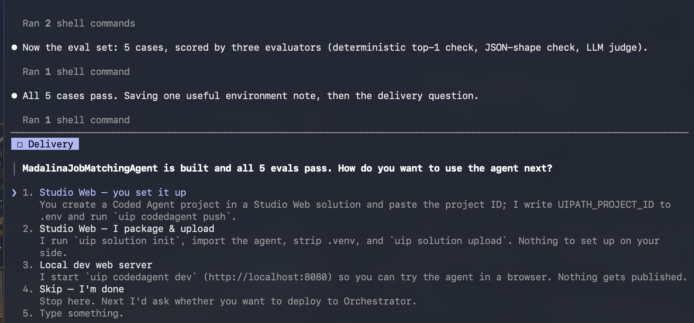
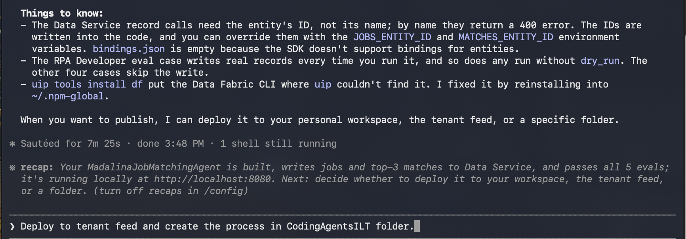
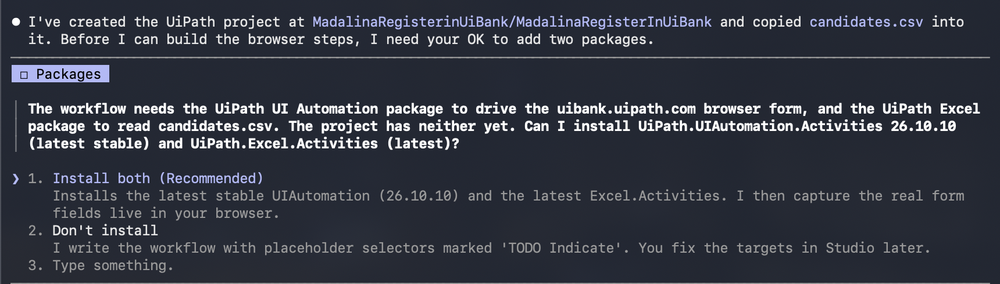
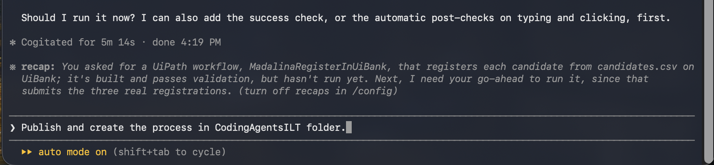
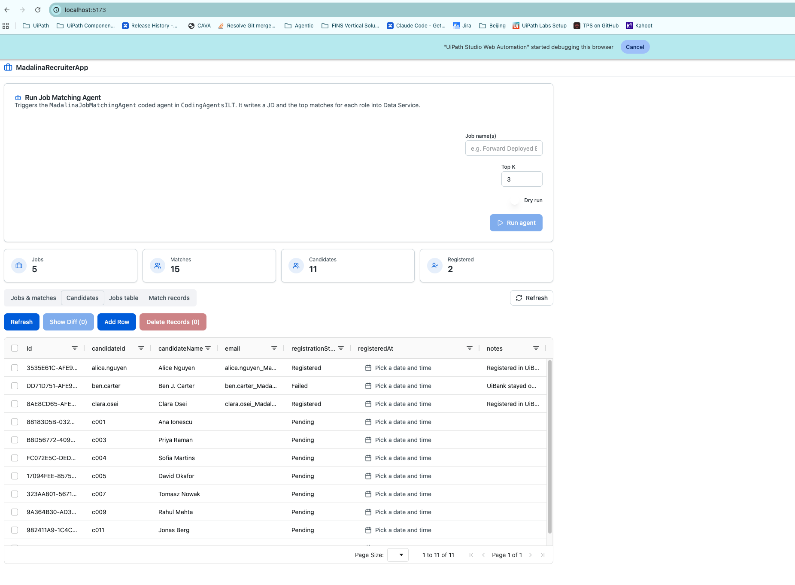
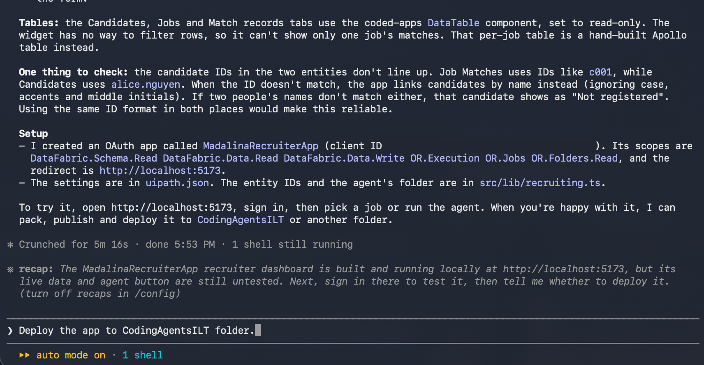

Coding Agents + UiPath: Hands-On Session¶
Build a Coded Agent, an RPA workflow, a Coded App, and a Maestro Flow — all from your coding agent, all wired into one recruitment pipeline.
Here is our plan for this session:
- Get the mental model for coding agents, skills, tools, and plugins — see What's a Coding Agent?.
- Build a Coded Agent that researches jobs and matches candidates.
- Build an RPA workflow that registers those candidates on a web form.
- Build a Coded App dashboard that shows the whole pipeline.
- Bring the agent and the RPA workflow together in a Maestro Flow that runs the pipeline end to end.
Overview¶
Every week a recruiter at a staffing agency does the same four things by hand: search job boards, write a description for each role, read through a candidate pool to find who fits, and register the shortlist in the client's portal. Hours of work, done differently by every recruiter, with nowhere to see where anyone stands.
You'll automate all four — by describing what you want in plain English and letting your coding agent build it. Three components, each handing work to the next through Data Service, and a Maestro Flow that runs them as one process. By the end you'll know exactly when code beats drag-and-drop, and why.
Goal¶
By the end of the session you'll have four deployed components talking to each other through Data Service: a Python agent that finds jobs and scores candidates, an XAML workflow that registers each candidate on a website with no API, a React dashboard the recruiter actually uses, and a Maestro Flow that runs the pipeline end to end. You'll have generated all four by prompting a coding agent — not by dragging activities onto a canvas or scaffolding React by hand.
Training Environment
Log in at https://cloud.uipath.com/tpenlabs using tenant CodingAgentsPractice.
What You'll Build¶
Four components, all built in the session:
- Coded Agent — a Python LangGraph agent that takes a list of job titles, web-searches current openings, generates a structured job description per role, scores a candidate pool against each one, and writes jobs and top-3 matches to Data Service
- RPA Workflow — a Studio XAML workflow that reads the matched candidates from Data Service, registers each one on the UiBank web form, and writes the registration status back
- Coded App — a React Coded App that reads the Jobs, Job Matches and Candidates entities and presents them to a recruiter, with a button that triggers the agent on demand
- Maestro Flow — a UiPath Flow that runs the agent, pauses for a recruiter to approve the shortlist, triggers the RPA registration, and surfaces the result in the app
The scenario¶
uibank.uipath.com/register-account.One connected story across all four labs — the first three hand their output to the next through Data Service, and Maestro runs them as a single process.
Authenticate with your tenant¶
You did this during Setup, but do it once more before you start Lab 1. Your login may have expired since then, and every lab writes to the same tenant.
Verify you're pointed at the right place:
Lab 1 — the Coded Agent¶
75 min build + 15 min review
What's a Coded Agent?¶
You pick the framework, use the UiPath SDK, package it with one CLI command, and deploy it to Orchestrator.
What the hiring agent does¶
The four nodes run in order — each one feeds the next, and Persist closes the loop by writing to Data Service for Lab 2 to pick up.
- 1 Prompt your coding agent to scaffold a LangGraph agent.
- 2 Wire the WebSearch tool into the graph.
- 3 Add a Data Service write step using the UiPath SDK.
- 4 Run an eval set, then deploy to your tenant.
- A list of target job titles (for example, "RPA Developer", "AI Engineer").
candidates.csv— provided below, see The sample candidate data.- Your Anthropic or OpenAI API key.
The prompt¶
This is real text you can paste:
Build a UiPath Coded Agent in LangGraph that:
1. Takes the name of a job as input
2. For each role, generates a structured JD with must-haves and nice-to-haves
3. Scores a list of candidates (generate the JSON list locally and use it as
part of the solution; it should contain at least one profile for Forward
Deployed Engineer) against each JD
4. Writes jobs and top-3 matches per role to the Data Service Jobs and
Job Matches entities
Include an eval set with 5 cases. The name of the agent should be
{YourName}JobMatchingAgent. Use the UiPath SDK.
-
1
Loads the
uipath-agentsskill. -
2
Generates
agent.pywith four nodes. - 3 Builds Pydantic models for jobs and matches.
- 4 Adds the Data Service write via the UiPath SDK.
-
5
Creates
evals/with five cases. - 6 Asks you to review before publishing.
What it generates¶
from langgraph.graph import StateGraph
from uipath import UiPath
sdk = UiPath()
def search_jobs(state):
# Built-in WebSearch tool -> recent postings per role
state["jobs"] = [web_search(t) for t in state["titles"]]
return state
def generate_jd(state):
# LLM call -> structured JD (Pydantic model)
...
def match_candidates(state):
candidates = sdk.buckets.read("candidates.csv")
# LLM scoring -> top-3 per role
...
def persist(state):
sdk.entities.bulk_create("Jobs", state["jobs"])
sdk.entities.bulk_create("JobMatches", state["matches"])
Publish the agent¶
Your coding agent might ask what to do next
Once the agent is built and the evals pass, your coding agent might ask how you want to use the agent next — for example Studio Web, Local dev web server, or Skip. If you get this question, choose Local dev web server. It starts uip codedagent dev at http://localhost:8080, so you can try the agent in your browser. Nothing gets published at this step. Then come back here and publish the agent.

The dev server keeps running in the background. When it starts, your coding agent prints a link to the local dev console, for example:
Open that link in your browser to see your agent running and try it out. The token is unique to you and changes each time the dev server starts, so copy the full link from your own terminal — the one above won't work as is.
Here's what a run looks like in the local dev console: enter a job title in the input, click Execute, and watch the agent go through each step of the graph. When it finishes, the traces show each step and the output shows the ranked candidates.
Once the local dev server is running, your coding agent might offer to deploy the agent for you — to your personal workspace, the tenant feed, or a specific folder. If it does, ask it to deploy:

If your coding agent doesn't offer this, publish the agent with one of the two options below.
Both paths do the same thing. Run the commands yourself if you want to see each step, or hand the whole job to your coding agent.
This assumes the uip CLI is installed and you're logged into the right org. Replace the project path and tenant name with your own.
# 1. Go to the agent project
cd job-matching-agent
# 2. Point the UiPath wrapper at the Python runtime
uip codedagent setup --force
# 3. Select the target tenant
uip login tenant set CodingAgentsPractice --output json
uip login status --output json
# 4. Initialize the coded agent project
uip codedagent init
# 5. Publish to the tenant feed
uip codedagent deploy --tenant
Give this prompt to your coding agent — it initializes the project and publishes for you:
Publish the {YourName}JobMatchingAgent coded agent I just built.
1. Point the UiPath wrapper at my Python runtime with `uip codedagent setup`.
2. Switch to the CodingAgentsPractice tenant and confirm `uip login status`
shows the right org and tenant before going further.
3. Initialize the coded agent project, then publish it to the tenant feed.
4. Report back the package name and version you published, and stop if any
step fails rather than retrying blindly.
Watch what it runs
The agent proposes each command before running it. Read them — publishing writes to your tenant feed, and that is the one step you want to see before it happens.
Lab 2 — the RPA Workflow¶
75 min build + 15 min review
Why RPA for this part?¶
What the workflow does¶
The four stages run in order — Read picks up what Lab 1 wrote, and Update hands the status on to the Coded App in Lab 3.
- 1 Prompt your coding agent to generate the XAML workflow.
- 2 Let it discover the project first, so it sees the existing packages.
- 3 Review the generated workflow in Studio Desktop.
- 4 Run against the sample CSV and verify the registrations.
uibank.uipath.com/register-account, the sample candidates.csv provided below, and UiPath Studio Desktop with the default packages.
The sample candidate data¶
Download the file, or copy the text and save it as candidates.csv yourself. Both give you the same data.
Save it in your workflow project folder.
Copy this and save it as candidates.csv in your workflow project folder:
first_name,last_name,middle_name,sex,title,employment_status,date_of_birth,marital_status,num_dependents,username,email,password
Alice,Nguyen,,Female,Ms,Full-time,1/15/1990,Single,0,alice.nguyen,alice.nguyen@example.com,Welcome2026!
Ben,Carter,J.,Male,Mr,Full-time,3/22/1985,Married,2,ben.carter,ben.carter@example.com,Welcome2026!
Clara,Osei,,Female,Ms,Full-time,7/4/1992,Single,1,clara.osei,clara.osei@example.com,Welcome2026!
Four things to tell the workflow about this data
- An empty
middle_nameis valid. The form should skip the field, not type an empty string. - The date format is
MM/DD/YYYY, which matches the form's picker. - UiBank rejects a username or email that's already registered. Everyone in the room starts from the same three candidates, and you'll run the workflow more than once, so the prompt asks the workflow to add
_{YourName}and a timestamp to both. - All test passwords are demo-grade. In production, pull them from a vault.
The prompt¶
Build a UiPath workflow that registers each candidate from candidates.csv at
uibank.uipath.com/register-account. The name of the workflow should be
{YourName}RegisterInUiBank. candidates.csv contains first_name, last_name,
middle_name, sex, title, employment_status, date_of_birth, marital_status,
num_dependents, username, email, and password. After each registration, write
the registration Status back to Data Service (Candidates entity).
UiBank doesn't allow two accounts with the same username or email, so make both
unique on every run: add _{YourName} and a timestamp to the username, and to
the part of the email before the @ (for example,
alice.nguyen_{YourName}_20261126153045 and
alice.nguyen_{YourName}_20261126153045@example.com).
Your coding agent might ask to install UiPath packages
If your project doesn't have the packages the workflow needs yet, your coding agent asks before it adds them — for example UiPath.UIAutomation.Activities to drive the browser form and UiPath.Excel.Activities to read candidates.csv. Confirm the install (choose Install both or the equivalent option). If you say no, the agent writes the workflow with placeholder selectors marked TODO Indicate, and you have to fix the targets in Studio yourself.

How the workflow skill thinks¶
The uipath-rpa skill is discovery-first. It reads before it writes:
Let me inspect the project first...
-> Reading project.json
-> Found packages: UiPath.UIAutomation.Activities,
UiPath.Excel.Activities, UiPath.WebAPI.Activities
-> Inspected candidates.csv header
I'll create RegisterCandidates.xaml with:
- Excel.ReadCsv -> DataTable
- For Each Row in candidates
- Open browser at registration URL
- Type Into each form field (skip empty middle name)
- Click Submit, wait for success element
- Write Status back to Data Service (Candidates entity)
- Try/Catch with screenshot on failure
Created RegisterCandidates.xaml (validated)
Four things worth noticing in that output:
Excel.ReadCsv exists and reaches for UI Automation activities.Run it in Studio¶
Once your coding agent has generated the workflow, check that it really works before you move on:
- Open Studio Desktop.
- Open the project your coding agent created:
{YourName}RegisterInUiBank. Your coding agent tells you where it saved it. In Studio, select Open and browse to the project'sproject.json. - Run the workflow manually: select Debug File › Run File, or press Ctrl + F6.
- Watch the robot open
uibank.uipath.com/register-accountand fill in the form for each candidate incandidates.csv.
If the run fails
Copy the error message from Studio's Output panel and paste it into your coding agent. Ask it to fix the workflow, then run it again in Studio.
Publish the workflow¶
Once the workflow runs in Studio, go back to your coding agent. It might ask whether to run the workflow itself or add more checks first. Ask it to publish instead:

Run it from Orchestrator¶
Once your coding agent confirms the process is created, run it from Orchestrator:
- Open Orchestrator and go to the CodingAgentsILT folder.
- Select Automations › Processes and find
{YourName}RegisterInUiBank. - Select Start a job (the ▶ icon) next to the process, then Start.
- Open the Jobs tab and watch the job until its state is Successful.
Lab 3 — the Coded App¶
100 min build + 20 min review
What's a Coded App?¶
@uipath/uipath-typescript gives you Cases, Tasks, Processes, Entities, and Buckets.What you'll build¶
A recruiter dashboard that reads the Jobs, Job Matches, and Candidates entities from Data Service.
- 1 Jobs list, sorted by recency.
- 2 Click into any job for the full description.
- 3 Candidate matches with their scores.
- 4 Registration status badges.
- 5 A button that triggers the Coded Agent on demand.
The prompt¶
Build a Coded App using UiPath TypeScript SDK called recruiter-dashboard.
It should:
1. Read Jobs from the UiPath Data Service Jobs entity
2. For each job, show the JD and matched candidates
3. Show registration status from the Candidates entity
4. Add a button that triggers the Coded Agent
The name of the app should be {YourName}RecruiterApp. Use uipath-coded-apps
for the table component.
And the structure it generates:
recruiter-dashboard/
├── package.json
├── uipath.json
├── src/
│ ├── App.tsx
│ ├── pages/
│ │ ├── JobsList.tsx
│ │ └── JobDetail.tsx
│ ├── hooks/
│ │ ├── useJobs.ts
│ │ └── useCandidates.ts
│ └── api/uipath.ts
└── README.md
What your coding agent reports back¶
After a few minutes your coding agent finishes with a summary of what it built and what it set up. Here's what to look for in it.
{YourName}RecruiterApp. It can read and write Data Service, start and monitor Orchestrator jobs, and redirects to http://localhost:5173. You don't have to create it by hand.uipath.json. The Data Service entity IDs and the agent's process name and folder go in src/config.ts. That's where to look if the app reads the wrong entity or triggers the wrong process.Your OAuth app's client ID is yours alone
The summary shows the client ID of the OAuth app the agent created. Everyone gets a different one, so don't copy IDs from a neighbour's screen or from this page.
Run the app locally¶
Start the app from the project folder:
Then open http://localhost:5173 and sign in with UiPath. Check that the Jobs, Job Matches, and Candidates tabs load data, and that the button triggers the Coded Agent.
Here's one example of what the app can look like: a form to run the Job Matching Agent, counters for jobs, matches, candidates, and registrations, and tabs with the Data Service records, including each candidate's registration status from Lab 2.

Your app will look different
Your coding agent designs the app from the prompt, so the layout, tabs, labels, and colours vary from participant to participant. That's expected. What matters is that it reads the Jobs, Job Matches, and Candidates entities, shows the registration status, and can trigger the Coded Agent.
Deploy the app¶
Your coding agent usually stops after the build and asks before it packs, publishes, or deploys anything. When the app works locally, ask it to take it live:

Behind the scenes it runs three commands, the same ones you'd run yourself:
uip codedapp pack dist -n {YourName}RecruiterApp --version 1.0.0
uip codedapp publish
uip codedapp deploy --folder-key <CodingAgentsILT-folder-key>
The agent looks up the folder key for you. To find it yourself, run uip or folders list --output json and copy the key of the CodingAgentsILT folder.
Optional: a Register candidate button
Your {YourName}RegisterInUiBank process from Lab 2 is in the same CodingAgentsILT folder, so your coding agent may offer to add a Register candidate button next to each candidate. Say yes if you have time. The recruiter can then register a candidate straight from the dashboard.
The Data Service hook¶
Here's how the dashboard reads jobs and matches:
import { UiPath } from '@uipath/uipath-typescript/core'
import { Entities } from '@uipath/uipath-typescript/entities'
import { useQuery } from '@tanstack/react-query'
const sdk = new UiPath({ /* env-based config */ })
export function useJobs() {
return useQuery({
queryKey: ['jobs'],
queryFn: async () => {
const entities = new Entities(sdk)
return entities.list('Jobs', { orderBy: 'createdAt desc' })
},
})
}
🔗 Lab 4 — the Maestro Flow¶
30 min build
Each lab left you with a deployed component and a Data Service entity. Maestro is what turns them into a single orchestrated process: it calls the agent, waits for the result, hands work to the RPA robot, and routes a human into the loop when one is needed.
- 1 Design a Maestro process that runs the three components end to end.
- 2 Trigger the Coded Agent to research jobs and write matches to Data Service.
- 3 Call the RPA workflow to register each matched candidate on UiBank.
- 4 Surface the results in the Coded App so a recruiter can review them.
- 5 Publish the process and run it once, start to finish.
Which skill to use¶
uipath-maestro-flow — it creates, validates, and debugs UiPath Flow projects in the .flow JSON format. You never hand-edit the JSON; you describe the process and let the agent build it, exactly as you did in the three labs.
A prompt to start from¶
Treat this as a starting point, not a script. Read what the agent proposes, push back, and iterate.
Build a Maestro Flow called {YourName}RecruitmentPipeline that orchestrates the
three components I already deployed:
1. Start by running my {YourName}JobMatchingAgent coded agent, passing in a list
of target job titles. Wait for it to finish writing Jobs and Job Matches to
Data Service.
2. Then run my {YourName}RegisterInUiBank RPA process for the matched candidates,
so each one gets registered on UiBank and the status is written back.
3. Add a human approval step before the RPA runs, so a recruiter can confirm
the shortlist first.
4. Validate the flow, publish it, and tell me the process key.
Discover what's already deployed in my tenant before you start, and ask me
before creating anything new.
What 'done' looks like
One Maestro run that starts from a list of job titles and ends with registered candidates visible in your Coded App — with no manual step in between except the approval you designed in.
Stuck? That's expected
This is the part nobody walks you through. Ask your coding agent to explain what it generated, check the run in Orchestrator, and send the interesting failures our way with uip feedback send.
Gotchas you'll hit¶
Things every team learns in the first month.
| Gotcha | What to do |
|---|---|
| Trust but verify | The agent is fast and confident. Always review generated XAML and run the eval set before publishing. |
| Pin your skill versions | Skills evolve. Lock to a version in your project so behaviour doesn't shift under you. |
| Context window matters | On large projects the agent can miss context. Tell it which files to focus on, or use an AGENTS.md. |
| Auth before everything | Run uip login first. Skills can't deploy if the CLI session expired — this is the usual cause of "it just stopped working". |
What you built¶
One end-to-end recruitment pipeline, in four pieces:
| # | Component | What it does |
|---|---|---|
| 01 | Coded Agent | LangGraph agent. Searches the web for jobs, generates job descriptions, matches candidates, writes to Data Service. |
| 02 | RPA Workflow | XAML workflow. Reads matched candidates, registers each on UiBank, updates status. |
| 03 | Coded App | React dashboard. Shows jobs, matches, and registration status, with a trigger button. |
| 04 | Maestro Flow | Runs the agent, waits for a recruiter's approval, then runs the RPA workflow. |
All four talk to each other. All four were built with your coding agent. All in one IDE session.
Next steps¶
This week
- Install the skills on your laptop and actually use them.
- Extend your Maestro Flow — add another step, a second approval, or a schedule.
Next 30 days
- Rebuild something you already maintain with a coding agent. Compare how long it took, and note where the agent needed correcting.
- Write your own skill for a pattern your team repeats, so the agent gets it right without being told twice.
- Push past the happy path: ask the agent for eval sets, error handling, and the deploy step you'd normally do by hand.
Ongoing
- Bring your questions. No question is too basic, especially this early.
- Tell us when something doesn't work. Run
uip feedback sendthe moment a skill guesses wrong, a command fails, or a step takes three tries. - Say what you'd want next. The rough edges you report are what shape the next version of the skills and the CLI.
Resources¶
| Resource | What's there |
|---|---|
| UiPath/skills | The skill repository. Read each SKILL.md. |
| Studio + Coding Agents | Official UiPath page on Studio with Claude Code, Codex, Cursor, and Gemini. |
| uipath-typescript | TypeScript SDK reference and sample Coded Apps. |
| uipath-langchain-python | LangGraph SDK for Coded Agents. |
Appendix: CLI cheat sheet¶
Commands you'll run every day with the uip CLI.
| Command | What it does | When you'll use it |
|---|---|---|
uip skills install |
Install UiPath skills into your coding agent | First-time setup, per project |
uip login |
Authenticate with your UiPath tenant | Start of each session |
uipath new |
Scaffold a new Coded Agent project | Starting a new agent |
uipath run |
Run the agent locally with input.json |
Testing during development |
uipath eval |
Run the evaluation set, score against expectations | Before deploying |
uipath publish |
Pack and publish to your tenant | Shipping |
uip push / uip pull |
Sync a Coded App with Studio Web | Coded App round-trips |